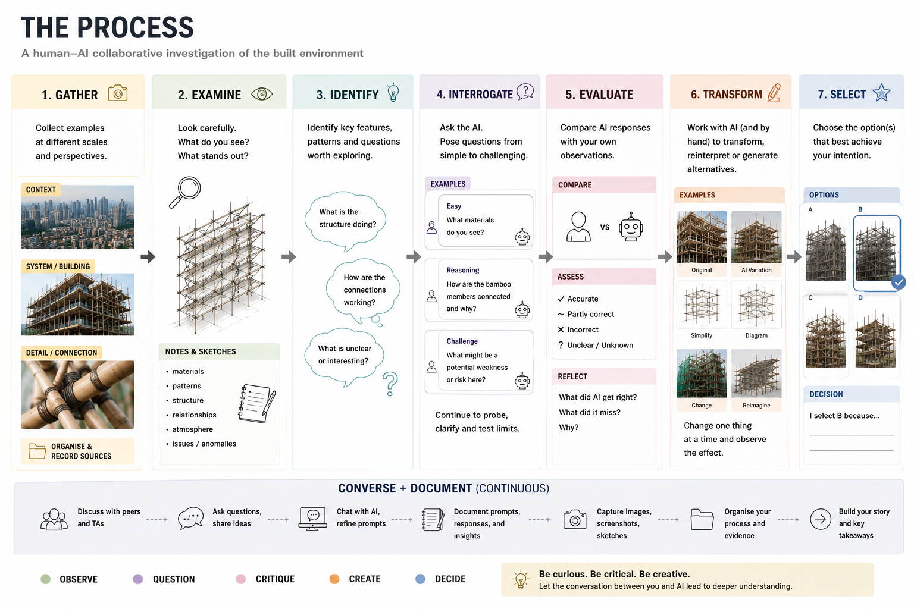

A.0: Applied Exercise
Seeing, Questioning & Creating with AI
Note: This Applied Exercise is currently under development. The scope, specific requirements, examples, recommended tools, formatting requirements, and submission instructions may be subject to revision. More detailed instructions will follow.
The Brief
Generative AI can increasingly see, interpret, describe, and transform visual information.
But what does it actually notice?
What does it understand?
What might it miss?
In this Applied Exercise, you will conduct a short visual investigation of the built environment.
You will first gather and examine visual material yourself, then use Generative AI to interrogate, evaluate, and transform what you have found.
The aim is not simply to obtain answers from AI.
The exercise asks you to explore the relationship between:
Human Observation → Machine Interpretation → Human–AI Exploration
Figure 1. Illustrative examples of possible subjects and visual artefacts. Image generated with ChatGPT / OpenAI.
What Might You Investigate?
Your investigation will focus on aspects of the built environment that can be observed at different scales, representations, and levels of detail.
Possible subjects include:
• Bamboo Scaffolds & Connections
• Façades, Building Envelopes & Massing
• Floor Plans & Massing
• Comfortable or “Happy” Places & Interiors
• Trusses, Frames, Connections & Buildings
You may move between:
• Context
– The larger urban, spatial, or environmental setting.
• System / Building
– The main object, space, structure, or building being investigated.
• Component / Detail
– A local feature, connection, element, room, material, or other detail.
Further guidance will be provided on what to gather and what to look for specifically.
The Process
The exercise follows a simple process.
1. Gather → Examine → Identify
• Gather
– Collect relevant visual material.
– Look across different scales, perspectives, or representations.
– Keep a record of where your material comes from.
• Examine
– Look carefully before turning to AI.
– What do you notice?
– What stands out?
– What appears unusual, interesting, or important?
• Identify
– Identify features, patterns, relationships, qualities, anomalies, or questions worth investigating.
– Develop some initial ideas based on your own observation.
2. Interrogate → Evaluate
• Interrogate
– Use a Generative AI system to examine the same material.
– Begin with straightforward questions.
– Then probe further and formulate more challenging questions.
You might investigate:
– What does the machine recognise correctly?
– What does it overlook?
– What does it misunderstand?
– What relationships can it identify?
– What conclusions does it make?
– What cannot actually be determined from the available information?
– Can you formulate a question that reveals the limits of the machine?
• Evaluate
– Compare the machine’s interpretation with your own observations.
– Identify where the human and machine readings agree or differ.
– Consider which interpretations are supported by the available evidence.
Do not simply accept the machine response.
Question it. Test it. Compare it.
3. Transform → Select
• Transform
– Work with AI — and where appropriate your own drawing, editing, modelling, or other methods — to transform what you have investigated.
– Produce variations, alternatives, reinterpretations, or new representations.
You might:
– Remove something
– Add something
– Change a feature
– Simplify a representation
– Exaggerate a quality
– Generate alternatives
– Reinterpret the same subject in another way
• Select
– Compare the alternatives you have produced.
– Select the outcome or outcomes that you find most meaningful, interesting, successful, or revealing.
– Briefly explain why you selected them.
4. Converse + Document
These activities happen throughout the entire exercise.
• Converse
– Discuss your observations with peers and tutors.
– Treat AI interaction as a dialogue rather than a single prompt.
– Ask follow-up questions.
– Refine your prompts.
– Challenge responses.
– Allow the conversation to help develop your investigation.
• Document
– Record the material you gathered.
– Record your observations and questions.
– Keep relevant prompts and AI responses.
– Capture images, screenshots, sketches, and transformations.
– Record what you selected and why.
– Organise the process into a clear visual story.

Figure 2. Overview of the Applied Exercise process. Image generated with ChatGPT / OpenAI.
What Are We Looking For?
This is an exploratory exercise.
You are not expected to already be an expert in architecture, structures, AI, or visual analysis.
We are interested in your ability to:
• Observe Carefully
– Gather relevant material and look closely before relying on AI.
• Identify & Question
– Recognise features, patterns, relationships, or issues worth investigating.
– Formulate thoughtful questions.
• Interrogate & Evaluate
– Test what AI can and cannot interpret.
– Compare machine responses with your own observations.
• Transform & Select
– Use AI creatively to develop variations or alternatives.
– Make reasoned selections rather than simply accepting generated outputs.
• Document Clearly
– Communicate the development of your investigation through evidence, prompts, images, comparisons, and concise explanations.
The quality of the investigation is more important than finding a single “correct” answer.
In Short
Gather → Examine → Identify
Interrogate → Evaluate
Transform → Select
Throughout:
Converse + Document
Look carefully.
Question critically.
Experiment creatively.
Document clearly.
Further Instructions
More detailed instructions will follow regarding:
• The specific material to gather
• What to look for and document
• How to formulate and test questions
• Recommended Generative AI tools
• How to transform and vary your material
• Required formatting and submission structure
• Assessment requirements
For now, focus on understanding the overall process and intention of the exercise.